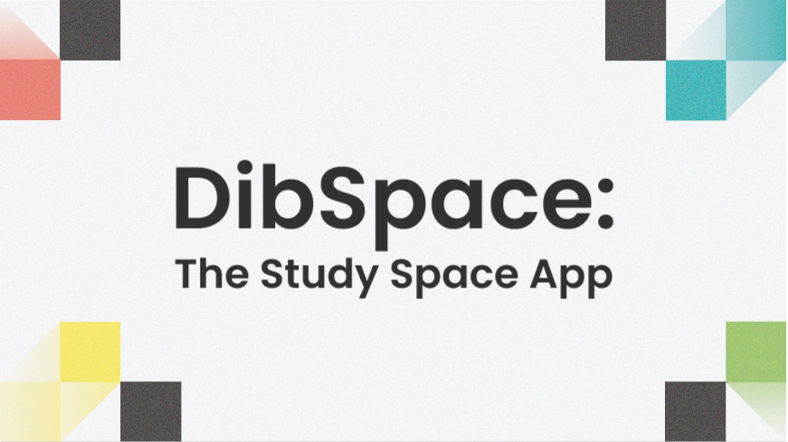
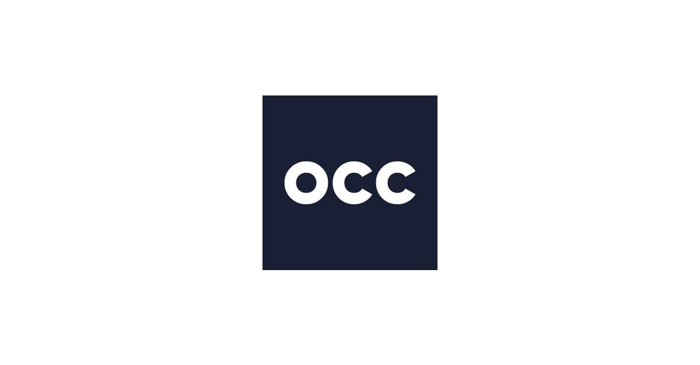
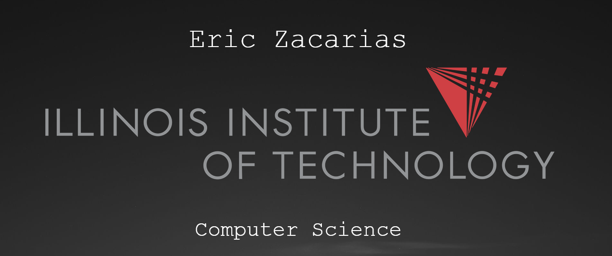
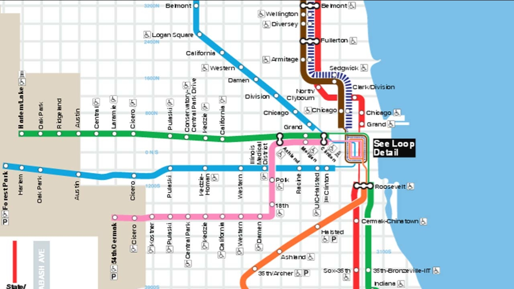

Amazon Web Services

Software and Programming

DibSpace

OCC Internship

Personal Website

Throughout the duration of my internship with the Options Clearing Corporation (OCC), I became proficent in Amazon Web Services such as Lambda (using the boto3 API), IAM, EC2, S3, and DynamoDB. I made use of all these services to automate the management and configuration of each service.
I am intially a self-taught programmer. During my time at my community college I bought a course on Udemy titled Beginning C++ Programming - From Beginner to Beyond. I finished the course during my winter break and proceeded to creating personal projects on the side (these can be found on my github). After learning C++, I proceeded to learning Python by finishing another course on Udemy titled Complete Python Bootcamp From Zero to Hero in Python. I made some simple projects using Python and then quickly transitioned into exploring web development. I created a simple website for my community college (unaffiliated) where students can find free eBooks for all the general education courses taught there.
Besides my self-taught experience, I learned Haskell, Java, and Javascript through my university courses. We used Haskell for functional programming applications, Java for object oriented programming and Android development, and Javascript for WebGL development. Out of all these, my most memorable experiences were using Java and Haskell. I loved the powerful applications of Java and the recursive properties of Haskell.
Check out my GitHubAt Illinois Tech we have an Interprofessional Projects Program (IPRO). The purpose of the IPRO is to bring students with various majors together and work on projects that tackle real-world problems.
During my Fall 2021 semester, I took an Advance Placement IPRO course titled Digital Development. Throughout the duration of the course, my team and I worked on a web application called DibSpace. DibSpace is designed for Illinois Tech students to choose and reserve study rooms around on campus.
I was in charge of building the backend for DibSpace using the Django Python framework as well as setting up our database using MySql.
Check out the project on GitHubI had my first internship opportunity with the Options Clearing Corporation (OCC) located in Chicago. OCC is the largest equity derivatives clearing organization in the world and helps promote stability and integrity in financial markets.
I joined the Platform Automation team at OCC and was mainly involved with using cloud services and technologies to automate IT infrastructure for various teams at OCC. We made use of AWS as our cloud provider and used Ansible, Terraform, Jenkins, and Kubernetes to aid in our CI/CD process.
Some of my most notable projects at OCC were updating Terraform modules to a new version along with updating documentation in Confluence on how to use the modules (many teams at OCC made use of these modules so keeping up to date on documentation is important). Most of these updates consisted of syntax changes and deprecations. Following updates, the modules were deployed and tested using a Jenkins pipeline.
Another project I was assigned to was researching Packer, a HashiCorp configuration tool that automates the creation of machine images. Creating machine images at OCC was a common task, however, there were no available automated solutions to expediate this process at OCC. Therefore after researching, gathering data, and testing Packer in a development environment, I presented my findings to my team during our agile retrospective meeting in hopes of adopting the technology into our current tech stack.
Towards the end of my internship, I was tasked with automating the management and configuration of AWS services in our AWS Sandbox account. At OCC, the AWS Sandbox account is frequently used by teams and consultants to test new technologies and implement cloud solutions, however many of the services deployed were not free and therefore costing OCC money. To address this issue, I created multiple lambda functions using the boto3 API and used AWS EventBridge to trigger the functions to run at specific times. For example, a few lambda functions ran at the end of every work day at 5PM and shutdown all EC2 resources and RDS resources. At the end of the month, a lambda function ran to terminate unused EC2, S3, and RDS resources. The outcome of the project helped cut down on costs by almost 30%.
I've always wanted a personal website for the purpose of personal branding. Also, I find web development to be fun because of the creative aspect about it. This website was made using HTML, CSS, and Bootstrap. I was partially inspired to create my own website after meeting a SHPE member from Texas A&M University who had created an amazing personal website, but he had to make it look professional since he was interested in doing web development as a career. I didn't bother making it look too nice since I am not fully invested in the web development path.
Anyways, I plan to hold a series of workshops this semester (Spring 2022) for my SHPE chapter at Illinois Tech to teach members how to create their own personal website.
Check out the project on GitHubIn my Accelerated Object Oriented Programming course at Illinois Tech, our final individual project was to create a tool that manages the Chicago Tranit Authority (CTA). My tool was capable of searching for the nearest station given the user's location and creating the most efficient route from one station to another and outputting the route instructions to the user. I made use of sorting and searching algorithms, formulas that convert coordinates to distance, and abstraction procedures.
Check out the project on GitHub